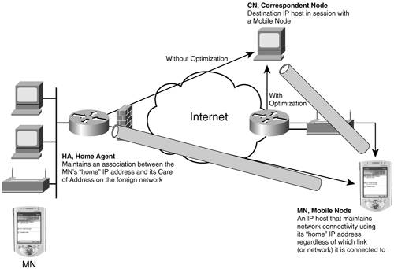
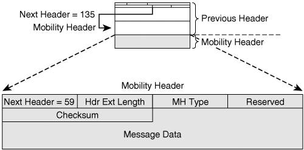
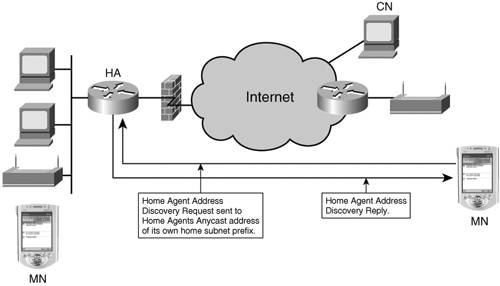
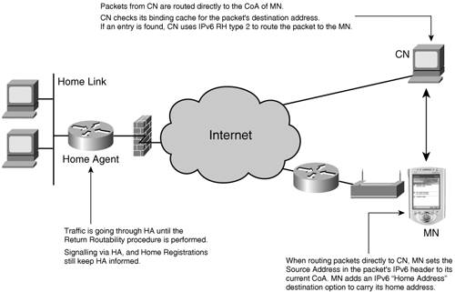
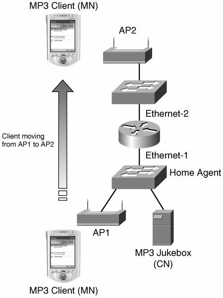

IP Host MobilityA wide consensus exists in the industry and at the standards bodies that IP mobility will better scale through the IPv6 adoption. On one hand, millions if not billions of roaming devices, from handhelds to phones and multimedia players, require more addressing capability than IPv4 can provide. On the other hand, the Internet can now be reached from any location, including automobiles, trains, airplanes, boats, and so on. This is enabling a new set of peer-to-peer applications, which disqualify Network Address Translation (NAT) as the usual workaround for IPv4 address depletion. Does that mean IPv6 is ready for large-scale IP mobility deployment? While a number of experiments and trials are being tested today, many areas remain work in progress, whether at standards, products, or applications level. Mobile IPv4 in a NutshellMobile IPv4 (MIPv4), specified in RFC 3344, provides a network-level indirection to the actual location of a mobile node, indirection that hides the mobility to its correspondent nodes. Although the mobile node, an IP host with a MIP stack, is located at a transient CareOf Address (CoA), a correspondent node reaches the device at its permanent Home Address (HoAddr). The indirection is maintained by a home agent that intercepts all the packets destined to the HoAddr of the mobile node and tunnels them to the CoA that the mobile node acquires locally at its new location. For details on MIPv4, we recommend the book Mobile IP Technology and Applications by Stefan Raab and Madhavi W. Chandra (Cisco Press). The IETF Mobile IP working group (MIPv4) took a number of shortcuts to produce a specification, leaving room for future work and improvements. Some of these unresolved issues (fast movement detection and handoff, home discovery, initial bootstrap configuration, and so on) are now addressed in the MIPv6-related working groups. MIPv4 operations imply a triangular routingthe so-called dogleg issue. The flows toward the mobile node are routed via its dedicated home agent, although only the return path is direct. The home agent is therefore a potential single point of failure for MIPv4 operations and a bottleneck for the forward traffic, which experiences additional latency and increased path length. Another issue with MIPv4 is the requirement for a pervasive deployment of foreign agents, for movement detection and CoA allocation. A mobile node can connect only at places where a foreign agent is available. This limits the deployability of IPv4 mobility. Another concern about MIP is the path from mobile node to the corresponding node. Because packets on this path are not tunneled, the mobile node HoAddr is used as source IPv4 address in all packets. This address is not topologically correct during a portion of the packet journey (until it leaves the foreign network). The packet can appear to be a spoofing attempt. Border routers typically perform ingress filtering (for example, unicast reverse path forwarding check), analyze source address, and prevent packets with a source address outside the internal subnet range to be forwarded. These limitations can be alleviated with the optional support of reverse tunneling and collocated CoA by the mobile node. These improvements to the basic MIPv4 are the default behavior in the case of IPv6 mobility. Mobile IPv6Note that even though IETF MIPv4 working group is still active, a lot of the mobility-related work in the standards bodies happens in the context of IPv6. 3GPP2 and 4G telephony standards are considering the use of MIPv6, and vehicular consortiums worldwide (Car2Car in Europe, InternetCar in Japan) have adopted IPv6 for car-to-car communication. Initially, MIPv6 was published as RFC 3775 and RFC 3776. RFC 3775 describes IPv6 mobility for mobile nodes, more specifically mobile hosts. RFC 3776 specifies the use of IP security in the context of RFC 3775. Mobile IPv6 Operation OverviewA MIPv6 mobile node registers with a home agent and establishes a bidirectional tunnel. One endpoint of the tunnel is fixed at the home agent address. The other endpoint of the tunnel is located at the mobile node CareOf Address (CoA), and it changes as the mobile node roams. The association between the HoAddr of a mobile node and its CoA is called a binding. Packets destined for the mobile node are received by the home agent and tunneled to the mobile node. As opposed to MIPv4, the tunnel between the mobile node and the home agent is bidirectional, and the return path is also through the home agent. This ensures the topological correctness of all flows, to avoid any conflicts with ingress filtering deployed in the IPv6 Network. RFC 3775 also describes the process of route optimization (RO) between the mobile node and the correspondent node. RO can only work between a MIPv6 mobile node and a MIPv6 correspondent node that support the feature in their IPv6 stacks. When RO is established, packets are tunneled directly between the correspondent node and the mobile node in both directions. Figure 8-1 shows the MIPv6 operations. Figure 8-1. MIPv6 OperationsA MIPv6 service is deployed as follows:
A mobile node is provisioned with the home prefix, and a HoAddr on that prefix. The HoAddr is the index for MIPv6 bindings. It is also a valid address on the home link, that the mobile node uses when it connects to the home link. The mobile node is also provisioned with initial security tokens to prove its identity when establishing bindings. IPv6 Mobility HeaderMIPv6 was designed as an extension of IPv6. It takes full benefit of the IPv6 packet structure as defined in RFC 2460, creating a new extension header (the Mobility header), a new destination option (the HoAddr option), and a new Routing header (RH type 2). MIPv6 also proxies the Neighbor Discovery Protocol on the home link, with the benefit of being independent from the data link layer technology. Finally, four ICMPv6 messages were created for the purpose of MIPv6, for the Dynamic Home Agent Address Discovery (DHAAD) mechanism and for network renumbering and address configuration on the mobile node (Mobile Prefix Solicitation/Advertisement). Figure 8-2 shows the layout of the Mobility header. Figure 8-2. Mobility Header The Mobility header is an extension header used by mobile nodes, correspondent nodes and home agents in all messaging related to the creation and management of bindings. Binding messages all use the Mobility header and do not convey any upper-layer information. The Mobility header appears in two different flows, the binding flow, and the return routability (RR) procedure that secures the MIP route optimization. The Mobility Header Type field identifies the particular mobility message:
To register, the mobile node sends a signed unicast Binding Update to the home agent, specifying its HoAddr and its CoA. To accept a new binding, the home agent must ensure that the address is not already bound to another home agent, or present on the home link. This is checked by means of the ND Duplicate Address Discovery (DAD) mechanism on the home link. If the home agent accepts the binding, it sends a positive Binding Acknowledgement back to the mobile node. Because of the DAD process, the initial binding might take more then 2 seconds to complete. It is not recommended to use such procedures as Optimistic DAD to improve that initial latency if the HoAddr is configured to the mobile node. Note that additional bootstrap mechanisms are being elaborated at IETF to allow the dynamic provisioning of the mobile node. Upon accepting the first Binding Update, the home agent allocates a binding cache entry indexed by the mobile node HoAddr and sets up a tunnel to the mobile node CoA. The mobile node uses the Binding Update message to maintain the tunnel. It is sent periodically, as a keepalive mechanism, and asynchronously when the mobile node moves and needs to update the home agent with the new CoA. Destination OptionMIPv6 defines one new destination option (Next Header value of 60), the home address option (option type 201). The HoAddr destination option is used in a packet sent by a mobile node while away from home, to inform the recipient of the mobile node's HoAddr. The receiving stack at the home agent will swap the source of the packet with the address in the destination option. As a result, the rest of the processing of the packet happens as if the source was on the home link. Dynamic Home Agent Address DiscoveryNote that RFC 3775 does not provide the means for the mobile node to acquire its full initial configuration dynamically; this is called the bootstrap problem, currently considered at IETF. On the other hand, RFC 3775 specifies an Internet Control Messaging Protocol (ICMP) flow for a mobile node to discover which home agent(s) are available on its home link; this is the Dynamic Home Agent Address Discovery (DHAAD). DHAAD is performed prior to any binding; it is stateless, unsecured, and is not associated with a HoAddr. With DHAAD, a mobile node forms its home agents anycast address based on its home network prefix and a suffix reserved for that purpose by RFC 2526. The anycast address is then used as destination for the DHAAD request. Figure 8-3 shows the DHAAD flow. Figure 8-3. DHAAD FlowThe home agents discover each other on the home link using an extension to the Neighbor Discovery Protocol. One of them receives the DHAAD request, and answers with a DHAAD reply that carries an ordered list of home agents. Note that the computation of the order of that list is not standardized, and that it can be used for such purposes as load balancing. As soon as the mobile node selects a new attachment router, it obtains a topologically correct IPv6 address, usually by means of stateless autoconfiguration from a prefix available on that router's link. This address will be used as CoA. The CoA is the source of the initial DHAAD flow. Route OptimizationWhen needed, the mobile node might leverage an RO mechanism in communicating with the correspondent node. RO bypasses the home agent, at the expense of an additional tunnel, mobile node to correspondent node. It cannot be expected that in the general case, any potential mobile node and correspondent node pair will share some form of trust model (such as a Public Key Infrastructure or a shared secret). To provide minimum security, the MIP6 working group designed a lightweight mechanism that allows the correspondent node to check that, at least, the home agent also trusts the identity of the mobile node. This mechanism, the return routability (RR) procedure, is initiated by the mobile node and must be completed before the mobile node can bind directly with the correspondent node. The mobile node sends two queries to the correspondent node, one directly from its CoA (the CoTi), and one via the home agent (the HoTi), from its HoAddr. The correspondent node responds to both over the incoming path. Each response carries a half of the key that, when complete, will be used by the mobile node to sign its binding and securely establish an RO tunnel with the correspondent node. The RR test is fully stateless on the correspondent node side, and relies on the fact that the mobile node to home agent tunnel is secured. Figure 8-4 shows the RO forwarding path. Figure 8-4. Route Optimization for MIPv6Although only a subset of all IPv6 nodes on the Internet will implement it, the RO mechanism is essential for the scalability of MIPv6 operations. It is expected to reduce or avoid congestion in the home network, and therefore to enable the use of low-end home agent equipment. In addition, it should reduce the load across the Internet and improve jitter and latency of communications. This is the reason why it was incorporated in the MIPv6 base specification, RFC 3775. However, RO does not come for free: It introduces additional states in the correspondent node, additional messages between the correspondent node and the mobile node, and requires specific MIPv6 support by the correspondent node, that will not be found in early IPv6 stacks and might be omitted in a number of specific nodes such as Internet routers, web servers, or embedded devices. For these reasons, RO remains an optional mechanism. Mobile IPv6 SecurityAs for all modern IETF standards, security issues have been seriously considered in the case of IPv6 mobility. The MIPv6 protocol is normally protected by IPsec. A specific test, the RR procedure, was designed to prove the mobile node identity in the context of RO. In more detail, RFCs 3775 and 3776 provide a number of security features, as follows:
Note An alternate mechanism (draft-ietf-mip6-auth-protocol: "Authentication Protocol for Mobile IPv6") is being discussed at the time of this writing in the IETF, for specific situations, such as 3GPP2, where IPsec is too complex for a light device such as a mobile phone. Mobile IPv6 DeploymentMIPv6 revolves around a specific link at a specific site, the home link. The MIP operation is based on ND extensions and proxying on that link. The home network is subnet on that link. MIPv6 is therefore a link-centric technology. Each mobile node must be provisioned with a home network prefix, its own HoAddr, and some security tokens to exchange keys and prove its identity. At a first glance, it might seem that DHAAD and home agent discovery on the home link provide redundancy, high availability, and load balancing. However, it is not all true for the following reasons:
In terms of routing, the home agents advertise the home prefix into their IGP. Note that if the interface to the home link fails, the home agent operations stop, even for existing flows between correspondent nodes and mobile nodes with an active binding. When the mobile node roams far away from home, the round-trip delay creates a window of time between the movement and the updating of the tunnel on the home agent side. During that window, packets are sent to the old CoA and cannot be delivered. Local Mobility Management (LMM) can reduce the binding latency and the loss of packets, at the expense of deploying additional, distributed agents in all regions. A LMM agent hides the local mobility of the mobile node, reducing dramatically the time window and the associated packet loss. In particular, Hierarchical MIP (HMIP) described in RFC 4140, is an experimental RFC that proposes a regional LMM solution that hides the MN movement from the home agent. A NETLMM working group has formed at the IETF to standardize a local solution that hides the MN movement from the MN itself. Note that specific support might be required in the mobile node for LMM purposes. Also, mobility and wireless connectivity fit well together. A widely available broadband wireless network access is required for IP mobility to take off. Such a service might take place with the emerging trend of mesh networking. A mesh network combines wireless communication (such as WLAN and WWAN) and some ad-hoc self-forming and self-healing technology to build a multi-hop radio network that extends the reach of traditional access points. As a result, mesh networking simplifies and reduces the cost of wireless access networks deployments, enabling new operators such as municipalities to offer citywide broadband services. A number of radio technologies are being developed or deployed around us. Handling mobility at layer 3 enables the reachability-aware use of different radio access technologies available at a given point of time. The type of service (coverage, range, bandwidth, cost, and so on) depends on the type of radio (WLAN, WWAN, EDGE). To optimize the connectivity as it roams, a mobile node can be equipped with multiple types of interfaces, and should provide the means for the upper layers to select the best access at any point of time depending on the required service level. Finally, MIPv6 cannot be deployed in the same fashion in all networks and with all clients. It can be expected that most large operating systems will provide a MIP client supporting both RFC 3775 and RFC 3776. But, for instance, lighter devices might not need or be able to handle complex functions such as IPsec. Configuration ExampleThe home agent has been available in Cisco IOS Software for field trial since 2001. It is compliant with RFC 3775 and is available commercially starting with 12.3(14)T and 12.4 releases. It has been demonstrated in technology previews, and the following example illustrates one of these previews. Figure 8-5 presents the MIPv6 example operations. Figure 8-5. MIPv6 Example The following elements are identified in Figure 8-5:
Example 8-1 shows the configuration of the router in Figure 8-5. Example 8-1. MIPv6 Home Agent Configuration Example
The command ipv6 mobile home-agent enables the home agent operation on the interface. By default, the home agent operation is disabled. To support DHAAD, the configuration of the anycast address is required, too. The command ipv6 mobile home-agent access <acl> configures a binding update filter using an access control list (ACL). When an ACL is configured, all received binding updates are filtered. This feature can be used to deny home agent services to mobile nodes that have roamed to particular subnetworks. When the filter blocks a Binding Update, a Binding Acknowledgement is returned with error status "Administratively prohibited." The default behavior is to have no filters; all Binding Updates are accepted. Note that the filter is also applied to DHAAD messages. When blocked, these are silently discarded. In ACL configuration, the source is the CoA and the destination is the HoA. The details of the CLI commands might evolve over time. For further details about Cisco IOS configuration, consult the Cisco IOS configuration guide. Note At the time of this writing, Cisco IOS Release 12.4 does not process the home agent traffic through the IPv6 Cisco Express Forwarding (CEF) switching path. As far as the authentication, Cisco IOS Software will implement an MD5 Lightweight authentication (and IPsec authentication in future releases). Using ACLs to Control MIPv6 Operation on the Home AgentA new feature has been introduced on Cisco routers, as part of the IPv6 ACL component, enabling a router to match packets containing the IPv6 extension headers introduced or modified by RFC 3775. The objective is to provide finer-grain control over routing header and ICMPv6 messages and prevent security holes where "everything" has to be wide open for the home agent MIPv6 operation to be allowed. The following list provides some examples on how this enhancement can be used:
|